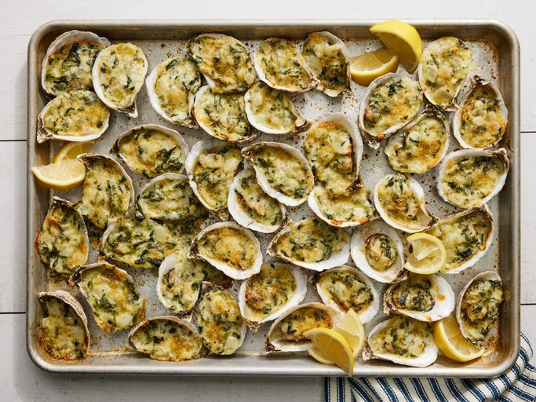

Rockin' Oysters Rockefeller

Ingredients
- 48 fresh, unopened oysters
- 1 1/2 cups beer
- 2 cloves garlic
- 7 black peppercorns
- seasoned salt to taste
- 1/2 cup butter
- 1 onion, chopped
- 1 clove garlic, crushed
- 1 (10 ounce) package frozen chopped spinach, thawed and drained
- 8 ounces Monterey Jack cheese, shredded
- 8 ounces fontina cheese, shredded
- 8 ounces mozzarella cheese, shredded
- 1/2 cup milk
- 2 teaspoons salt, or to taste
- 1 teaspoon ground black pepper
- 2 tablespoons fine bread crumbs